Осциллограф
Осциллограф предназначен для визуального наблюдения и контроля периодических сигналов любой формы: синусоидальной, прямоугольной и треугольной. Благодаря широкому диапазону развёртки он позволяет так развернуть импульс, что можно контролировать даже наносекундные интервалы. Например, измерить время нарастания импульса, а в цифровой аппаратуре это очень важный параметр.
Осциллограф – это своего рода телевизор, который показывает электрические сигналы.
Как работает осциллограф?
Чтобы понять, как работает осциллограф, рассмотрим структурную схему усреднённого прибора. Практически все осциллографы устроены именно так.
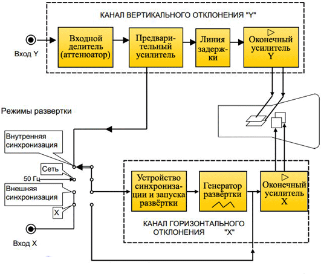
Рис. 1 - Структурная схема осциллографа
На схеме не показаны только два блока питания: высоковольтный источник, который используется для вырабатывания высокого напряжения поступающего на ЭЛТ (электронно-лучевая трубка) и низковольтный, обеспечивающий работу всех узлов прибора. И отсутствует встроенный калибратор, который служит для настройки осциллографа и подготовки его к работе.
Исследуемый сигнал подаётся на вход "Y" канала вертикального отклонения и попадает на аттенюатор, который представляет собой многопозиционный переключатель, регулирующий чувствительность. Его шкала отградуирована в V/см или V/дел. Имеется в виду одно деление координатной сетки нанесённой на экран ЭЛТ. Там же нанесены сами величины: 0,1 В,10 В, 100 В. Если амплитуда исследуемого сигнала неизвестна, мы устанавливаем минимальную чувствительность, например 100 вольт на деление. Тогда даже сигнал амплитудой 300 вольт не выведет прибор из строя.
В комплект любого осциллографа входят делители 1 : 10 и 1 : 100 они представляют собой цилиндрические или прямоугольные насадки с разъёмами с двух сторон. Выполняют те же функции, что и аттенюатор. Кроме того при работе с короткими импульсами они компенсируют ёмкость коаксиального кабеля. Вот так выглядит внешний делитель от осциллографа С1-94. Как видим, коэффициент деления его составляет 1 : 10.
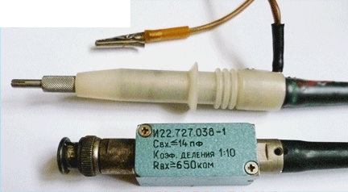
Рис. 2 - Внешний делитель осциллографа
Благодаря внешнему делителю удаётся расширить возможности прибора, так как при его использовании становится возможным исследование электрических сигналов с амплитудой в сотни вольт.
С выхода входного делителя сигнал поступает на предварительный усилитель. Здесь он разветвляется и поступает на линию задержки и на переключатель синхронизации. Линия задержки предназначена для компенсации времени срабатывания генератора развёртки с поступлением исследуемого сигнала на усилитель вертикального отклонения. Оконечный усилитель формирует напряжение, подаваемое на пластины "Y" и обеспечивает отклонение луча по вертикали.
Генератор развёртки формирует пилообразное напряжение, которое подаётся на усилитель горизонтального отклонения и на пластины "X" ЭЛТ и обеспечивает горизонтальное отклонение луча. Он имеет переключатель, градуированный как время на деление ("Время/дел"), и шкалу времени развёртки в секундах (s), миллисекундах (ms) и микросекундах (?s).
Устройство синхронизации обеспечивает начало запуска генератора развёртки одновременно с возникновением сигнала в начальной точке экрана. В результате на экране осциллографа мы видим изображение импульса развёрнутое во времени. Переключатель синхронизации имеет следующие положения:
- Синхронизация от исследуемого сигнала.
- Синхронизация от сети.
- Синхронизация от внешнего источника.
Первый вариант наиболее удобный и он используется чаще всего.
Осциллограф С1-94
Кроме сложных и дорогих моделей осциллографов, которые используются при разработке электронной аппаратуры, нашей промышленностью был налажен выпуск малогабаритного осциллографа C1-94 специально для радиолюбителей. Несмотря на невысокую стоимость, он хорошо зарекомендовал себя в работе и обладает всеми функциями дорогого и серьёзного прибора.
В отличие от своих более "навороченных" собратьев, осциллограф С1-94 обладает достаточно небольшими размерами, а также прост в использовании.
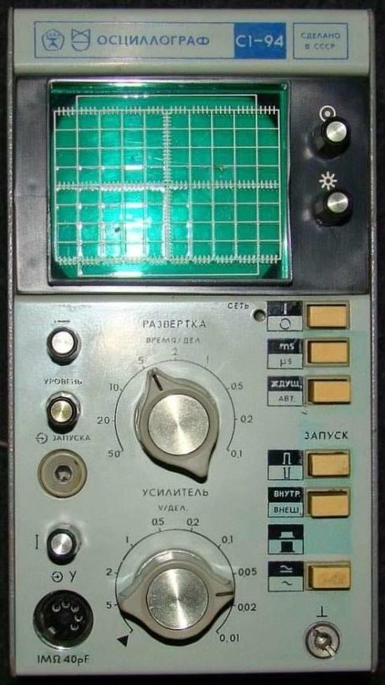
Рис. 3 - Лицевая панель осциллографа С1-94
Рассмотрим его органы управления.
- Ручка: «Фокус».
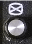
- Ручка «Яркость».
Этими регуляторами можно настроить фокусировку луча на экране, а также его яркость. В целях продления срока службы ЭЛТ желательно выставлять яркость на минимум, но так, чтобы показания были видны достаточно чётко.
- Кнопка «Сеть». Кнопка включения прибора.
- Кнопка установки времени развёртки. Грубое переключение коэффициентов развёртки. Можно установить миллисекунды (ms) и микросекунды (µs). Напомним, что 1 ms = 1000 µs.
- Кнопка режима «Ждущ-Авт».
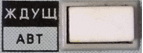
Это кнопка выбора ждущего и автоматического режима развёртки. При работе в ждущем режиме запуск и синхронизация развёртки производится исследуемым сигналом. При автоматическом режиме запуск развёртки происходит без сигнала. Для исследования сигнала чаще используется ждущий режим запуска развёртки.
- Вот этой кнопкой производится выбор полярности запускающего импульса. Можно выбрать запуск от импульса положительной или отрицательной полярности.
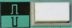
- Кнопка установки синхронизации «Внутр-Внешн».
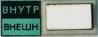
Обычно используется внутренняя синхронизация, так как для использования внешнего синхросигнала нужен отдельный источник этого внешнего сигнала. Понятно, что в условиях домашней мастерской это в подавляющем случае не нужно. Вход внешнего синхросигнала на лицевой панели осциллографа выглядит вот так.
- Кнопка выбора "Открытого" и "Закрытого" входа.
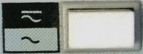
Тут всё понятно. Если предполагается исследование сигнала с постоянной составляющей, то выбираем "Переменный и постоянный". Этот режим называется "Открытым", так как на канал вертикального отклонения подаётся сигнал, содержащий в своём спектре постоянную составляющую или низкие частоты.
При этом, стоит учитывать, что при отображении сигнала на экране он уйдёт вверх, так как к амплитуде переменной составляющей добавиться и уровень постоянной составляющей. В большинстве случаев лучше выбирать "закрытый" вход (~). При этом постоянная составляющая электрического сигнала будет отсечена и не отображается на экране.
- По центру лицевой панели переключатель «развёртка» - Время/дел. Именно этот переключатель управляет работой генератора развёртки.
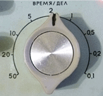
- Чуть ниже располагается переключатель входного делителя (аттенюатора) - V/дел. Как уже говорилось, при исследовании сигнала с неизвестной амплитудой, необходимо выставить максимально возможное значение V/дел. Так для осциллографа С1-94 нужно установить переключатель в положение 5 (5V/дел.). В таком случае одна клетка на координатной сетке экрана будет равна 5-ти вольтам. Если ко входу "Y" осциллографа подключить делитель с коэффициентом деления 1 к 10 (1 : 10), то одна клетка будет равна 50-ти вольтам (5V/дел. * 10 = 50V/дел.).
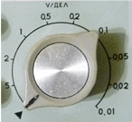
- Ручка «Перемещение луча по горизонтали».
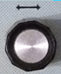
Она служит для корректировки положения луча в горизонтальном направлении. Если покрутить данную ручку, то изображение развёртки будет смешатся либо вправо, либо влево.
- Также есть и ручка «Перемещение луча по вертикали».
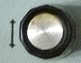
С помощью её можно отрегулировать положение развёртки на экране по вертикали.
Ручки «Перемещение луча по горизонтали» и «Перемещение луча по вертикали» служат исключительно для настройки комфортного отображения осциллограммы сигнала на экране. Они никак не влияют на настройку работы самого осциллографа.
- А вот ручка «Уровень синхронизации» необходима для того, чтобы "остановить" осциллограмму сигнала на экране.
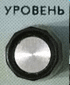
Поворотом этой ручки добиваются того, чтобы изображение сигнала "застыло", а не "убегало". Иногда, чтобы поймать изображение с помощью ручки "Уровень" приходится изменить время развёртки переключателем Время/дел.
- Входной разъём "Y" , к которому подключается измерительный щуп или внешний делитель выглядит так.
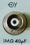
Внизу указываются параметры входа, а именно входное сопротивление (1 MΩ) и входная ёмкость (40pF). Чем выше входное сопротивление измерительного прибора, тем лучше. Таким образом при измерении прибор не шунтирует элементы тестируемой схемы и не вносит искажений в измеряемый сигнал. Входная ёмкость прежде всего влияет на возможность исследования высокочастотных сигналов.
Клемма «корпус» служит для заземления корпуса прибора. Это делается в целях безопасности. В условиях домашней мастерской порой нет возможности заземлить корпус прибора. Поэтому приходится работать без заземления. При этом важно помнить, что во включенном состоянии на корпусе осциллографа может быть потенциал напряжения. При касании корпуса может "дёрнуть". Особенно опасно дотрагиваться одной рукой до корпуса осциллографа, а другой рукой до батарей отопления или других работающих электроприборов. В таком случае опасный потенциал с корпуса пройдёт через ваше тело ("рука" - "рука") и вы получите электрический удар! Поэтому при работе осциллографа без заземления желательно не дотрагиваться до металлических частей корпуса. Это правило справедливо и для прочих электроприборов с металлическим корпусом.
В настоящее время, с развитием цифровой техники, стали широко внедряться цифровые осциллографы. По сути это гибрид аналоговой и цифровой техники. Отношение к ним неоднозначное, как к мясорубке с процессором или к кофемолке с дисплеем.
Аналоговая аппаратура всегда была надежной и удобной в работе. Кроме того она легко ремонтировалась. Цифровой осциллограф стоит на порядок дороже и очень сложен в ремонте. Плюсов конечно много. Если аналоговый сигнал с помощью АЦП (аналогово-цифрового преобразователя) перевести в цифровую форму, то с ним можно делать всё что угодно. Его можно записать в память и в любой момент вывести на экран для сравнения с другим сигналом, складывать в фазе и противофазе с другими сигналами. Конечно, аналоговая техника это хорошо, но за цифровой электроникой будущее.